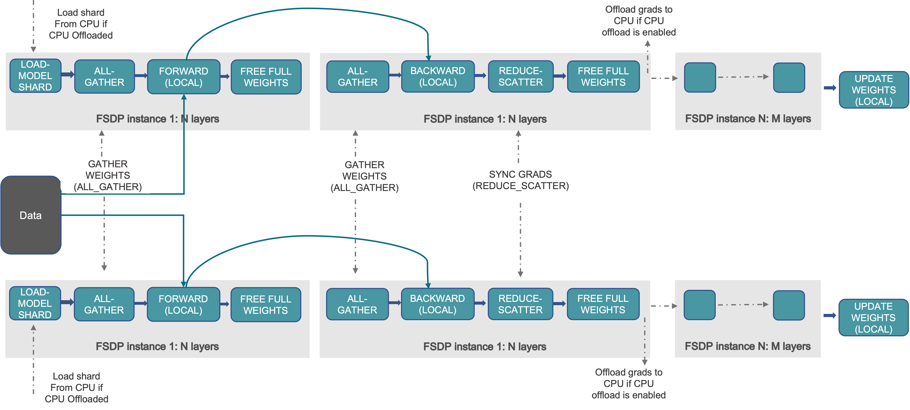
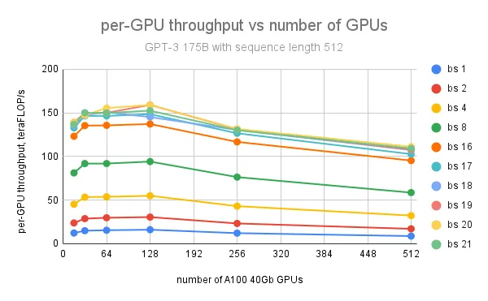
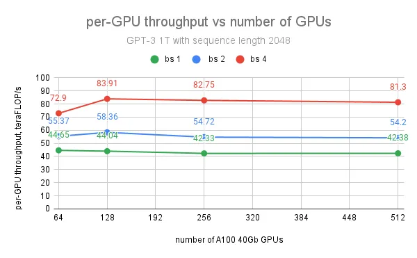

Recent studies have shown that large model training will be beneficial for improving model quality. During the last 3 years, model size grew 10,000 times from BERT with 110M parameters to Megatron-2 with one trillion. However, training large AI models is not easy—aside from the need for large amounts of computing resources, software engineering complexity is also challenging. PyTorch has been working on building tools and infrastructure to make it easier.
PyTorch Distributed data parallelism is a staple of scalable deep learning because of its robustness and simplicity. It however requires the model to fit on one GPU. Recent approaches like DeepSpeed ZeRO and FairScale’s Fully Sharded Data Parallel allow us to break this barrier by sharding a model’s parameters, gradients and optimizer states across data parallel workers while still maintaining the simplicity of data parallelism.
With PyTorch 1.11 we’re adding native support for Fully Sharded Data Parallel (FSDP), currently available as a prototype feature. Its implementation heavily borrows from FairScale’s version while bringing more streamlined APIs and additional performance improvements.
Scaling tests of PyTorch FSDP on AWS show it can scale up to train dense models with 1T parameters. Realized performance in our experiments reached 84 TFLOPS per A100 GPU for GPT 1T model and 159 TFLOPS per A100 GPU for GPT 175B model on AWS cluster. Native FSDP implementation also dramatically improved model initialization time compared to FairScale’s original when CPU offloading was enabled.
In future PyTorch versions, we’re going to enable users to seamlessly switch between DDP, ZeRO-1, ZeRO-2 and FSDP flavors of data parallelism, so that users can train different scales of models with simple configurations in the unified API.
How FSDP Works
FSDP is a type of data-parallel training, but unlike traditional data-parallel, which maintains a per-GPU copy of a model’s parameters, gradients and optimizer states, it shards all of these states across data-parallel workers and can optionally offload the sharded model parameters to CPUs.
The figure below shows how FSDP works for 2 data-parallel processes:

Figure 1. FSDP workflow
Usually, model layers are wrapped with FSDP in a nested way, so that only layers in a single FSDP instance need to gather the full parameters to a single device during forward or backward computations. The gathered full parameters will be freed immediately after computation, and the freed memory can be used for the next layer’s computation. In this way, peak GPU memory could be saved and thus training can be scaled to use a larger model size or larger batch size. To further maximize memory efficiency, FSDP can offload the parameters, gradients and optimizer states to CPUs when the instance is not active in the computation.
Using FSDP in PyTorch
There are two ways to wrap a model with PyTorch FSDP. Auto wrapping is a drop-in replacement for DDP; manual wrapping needs minimal changes of model definition code with the ability to explore complex sharding strategies.
Auto Wrapping
Model layers should be wrapped in FSDP in a nested way to save peak memory and enable communication and computation overlapping. The simplest way to do it is auto wrapping, which can serve as a drop-in replacement for DDP without changing the rest of the code.
fsdp_auto_wrap_policy argument allows specifying a callable function to recursively wrap layers with FSDP. default_auto_wrap_policy function provided by the PyTorch FSDP recursively wraps layers with the number of parameters larger than 100M. You can supply your own wrapping policy as needed. The example of writing a customized wrapping policy is shown in the FSDP API doc.
In addition, cpu_offload could be configured optionally to offload wrapped parameters to CPUs when these parameters are not used in computation. This can further improve memory efficiency at the cost of data transfer overhead between host and device.
The example below shows how FSDP is wrapped using auto wrapping.
from torch.distributed.fsdp import (
FullyShardedDataParallel,
CPUOffload,
)
from torch.distributed.fsdp.wrap import (
default_auto_wrap_policy,
)
import torch.nn as nn
class model(nn.Module):
def __init__(self):
super().__init__()
self.layer1 = nn.Linear(8, 4)
self.layer2 = nn.Linear(4, 16)
self.layer3 = nn.Linear(16, 4)
model = DistributedDataParallel(model())
fsdp_model = FullyShardedDataParallel(
model(),
fsdp_auto_wrap_policy=default_auto_wrap_policy,
cpu_offload=CPUOffload(offload_params=True),
)Manual Wrapping
Manual wrapping can be useful to explore complex sharding strategies
by applying wrap selectively to some parts of the model.
Overall settings can be passed to the enable_wrap() context manager.
from torch.distributed.fsdp import (
FullyShardedDataParallel,
CPUOffload,
)
from torch.distributed.fsdp.wrap import (
enable_wrap,
wrap,
)
import torch.nn as nn
from typing import Dict
class model(nn.Module):
def __init__(self):
super().__init__()
self.layer1 = wrap(nn.Linear(8, 4))
self.layer2 = nn.Linear(4, 16)
self.layer3 = wrap(nn.Linear(16, 4))
wrapper_kwargs = Dict(cpu_offload=CPUOffload(offload_params=True))
with enable_wrap(wrapper_cls=FullyShardedDataParallel, **wrapper_kwargs):
fsdp_model = wrap(model())After wrapping the model with FSDP using one of the two above approaches, the model can be trained in a similar way as local training, like this:
optim = torch.optim.Adam(fsdp_model.parameters(), lr=0.0001)
for sample, label in next_batch():
out = fsdp_model(input)
loss = criterion(out, label)
loss.backward()
optim.step()Benchmark Results
We ran extensive scaling tests for 175B and 1T GPT models on AWS clusters using PyTorch FSDP. Each cluster node is an instance with 8 NVIDIA A100-SXM4-40GB GPUs, and inter-nodes are connected via AWS Elastic Fabric Adapter (EFA) with 400 Gbps network bandwidth.
GPT models are implemented using minGPT. A randomly generated input dataset is used for benchmarking purposes. All experiments ran with 50K vocabulary size, fp16 precision and SGD optimizer.
| Model | Number of layers | Hidden size | Attention heads | Model size, billions of parameters |
|---|---|---|---|---|
| GPT 175B | 96 | 12288 | 96 | 175 |
| GPT 1T | 128 | 25600 | 160 | 1008 |
In addition to using FSDP with parameters CPU offloading in the experiments, the activation checkpointing feature in PyTorch is also applied in the tests.
The maximum per-GPU throughput of 159 teraFLOP/s (51% of NVIDIA A100 peak theoretical performance 312 teraFLOP/s/GPU) is achieved with batch size 20 and sequence length 512 on 128 GPUs for the GPT 175B model; further increase of the number of GPUs leads to per-GPU throughput degradation because of growing communication between the nodes.
For the GPT 1T model, the maximum per-GPU throughput of 84 teraFLOP/s (27% of the peak teraFLOP/s) is achieved with batch size 4 and sequence length 2048 on 128 GPUs. However, further increase of the number of GPUs doesn’t affect the per-GPU throughput too much because we observed that the largest bottleneck in the 1T model training is not from communication but from the slow CUDA cache allocator when peak GPU memory is reaching the limit. The use of A100 80G GPUs with larger memory capacity will mostly resolve this issue and also help scale the batch size to achieve much larger throughput.


Future Work
In the next beta release, we are planning to add efficient distributed model/states checkpointing APIs, meta device support for large model materialization, and mixed-precision support inside FSDP computation and communication. We’re also going to make it easier to switch between DDP, ZeRO1, ZeRO2 and FSDP flavors of data parallelism in the new API. To further improve FSDP performance, memory fragmentation reduction and communication efficiency improvements are also planned.
A Bit of History of 2 Versions of FSDP
FairScale FSDP was released in early 2021 as part of the FairScale library. And then we started the effort to upstream FairScale FSDP to PyTorch in PT 1.11, making it production-ready. We have selectively upstreamed and refactored key features from FairScale FSDP, redesigned user interfaces and made performance improvements.
In the near future, FairScale FSDP will stay in the FairScale repository for research projects, while generic and widely adopted features will be upstreamed to PyTorch incrementally and hardened accordingly.
Meanwhile, PyTorch FSDP will focus more on production readiness and long-term support. This includes better integration with ecosystems and improvements on performance, usability, reliability, debuggability and composability.
Acknowledgments
We would like to thank the authors of FairScale FSDP: Myle Ott, Sam Shleifer, Min Xu, Priya Goyal, Quentin Duval, Vittorio Caggiano, Tingting Markstrum, Anjali Sridhar. Thanks to the Microsoft DeepSpeed ZeRO team for developing and popularizing sharded data parallel techniques. Thanks to Pavel Belevich, Jessica Choi, Sisil Mehta for running experiments using PyTorch FSDP on different clusters. Thanks to Geeta Chauhan, Mahesh Yadav, Pritam Damania, Dmytro Dzhulgakov for supporting this effort and insightful discussions.